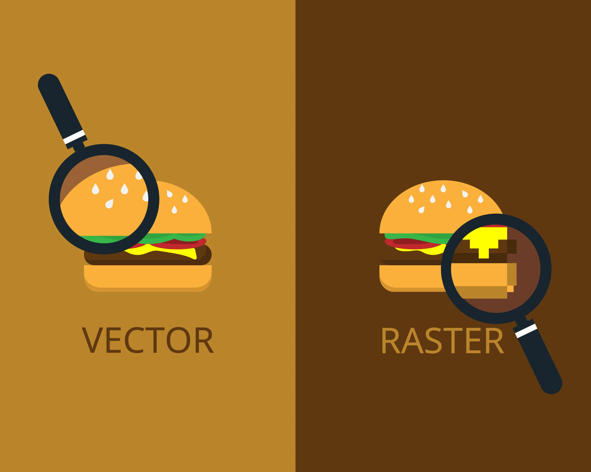
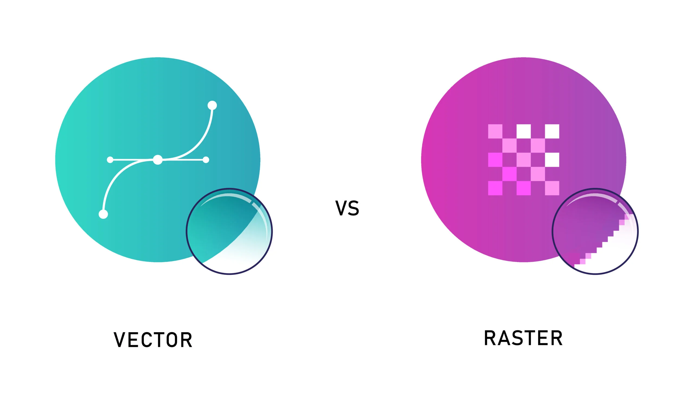

Kompedium wiedzy


1. Grafika komputerowa
Grafika komputerowa obejmuje tworzenie i edycję obrazów za pomocą komputera.
Stosowana w projektowaniu, grach, multimediach.
2. Grafika wektorowa
Składa się z pikseli, co umożliwia realistyczne odwzorowanie szczegółów,
ale traci jakość przy powiększaniu. Przykłady formatów: JPEG, PNG.
3. rastrowa
Opiera się na matematycznych kształtach, co pozwala na skalowanie bez utraty jakości.
Idealna do logo i ilustracji. Przykłady formatów: SVG, AI.